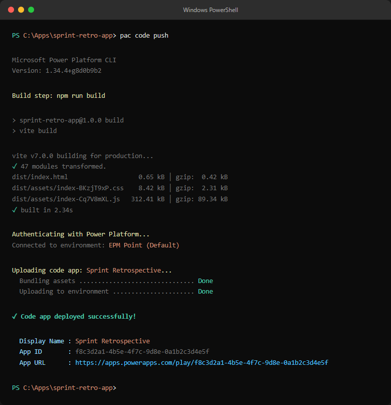

Building a Sprint Retrospective App on Power Apps Code Apps
The Problem: Retrospectives Are Broken
Most agile teams know the value of a good sprint retrospective. In theory it is a structured conversation about what went well, what did not, and what needs to change. In practice it often looks like this: someone shares a Miro board or a sticky-note Jam, the team fills it in, someone reads the notes aloud, and action items get written into a chat message that nobody looks at again.
Three things consistently go wrong:
- Action items fall through the cracks. There is no formal ownership, no status tracking, and no connection between an action and the feedback that generated it.
- Psychological safety is fragile. When feedback is always attributable, team members self-censor. The most important things often go unsaid.
- There is no continuity between sprints. Incomplete actions from Sprint 5 quietly disappear when Sprint 6 starts.
The goal of this project was to solve all three inside the Microsoft 365 ecosystem — no new SaaS subscriptions, no external databases, no change-management headaches.
Why Power Apps Code Apps?
Power Apps Code Apps is a relatively new capability in the Power Platform that lets you build a Power App using a standard web front-end stack — React, TypeScript, Vite — and deploy it as a first-class Power App. You get:
- Microsoft Entra (Azure AD) authentication with zero configuration
- SharePoint Online connectors with auto-generated TypeScript service clients
- Deployment via a single CLI command (
pac code push) - The app lives in your Power Apps environment alongside canvas and model-driven apps
The alternative was a standalone Azure Static Web App with its own authentication and SharePoint Graph API integration. That is a valid choice, but it adds infrastructure, a separate identity configuration, and a longer path from "developer laptop" to "available to the team in Teams."
For an internal productivity tool used by a single organisation, Power Apps Code Apps is the right trade-off. You get modern web development tooling while staying firmly inside the Microsoft 365 governance boundary.

What the App Does
The app is a four-column retrospective board with a structured session lifecycle.
The Four Columns
| Column | Purpose |
|---|---|
| What We Liked | Celebrate what worked well this sprint |
| What We Missed | Honest reflection on gaps and problems |
| What We Learned | Knowledge gained — technical, process, team |
| Appreciations | Shout-outs and recognition between team members |
The Appreciations column in particular tends to generate genuine engagement and improve team cohesion over time — something a generic sticky-note board rarely achieves consistently.
Session Lifecycle
Every retrospective is a session that moves through three states:
- Draft — The Scrum Master creates and configures the session. No submissions accepted yet.
- Open — The board is live. Team members can add items, vote, and attach action items to feedback cards.
- Closed — The board is read-only. The Scrum Master can run the carry-over process to push incomplete actions into the next sprint.
Role-Based Access
| Action | Scrum Master | Team Member | Viewer |
|---|---|---|---|
| View retro board | ✅ | ✅ | ✅ |
| Create sessions | ✅ | ❌ | ❌ |
| Change session status | ✅ | ❌ | ❌ |
| Add retro items | ✅ | ✅ | ❌ |
| Vote on items | ✅ | ✅ | ❌ |
| Add action items | ✅ | ✅ | ❌ |
| Edit action item status | ✅ | Owner only | ❌ |
| Carry over actions | ✅ | ❌ | ❌ |
| See anonymous authors | ✅ | ❌ | ❌ |


Architecture
Tech Stack
| Layer | Choice | Rationale |
|---|---|---|
| UI Framework | React 19 + TypeScript | Standard modern web stack; strong ecosystem |
| Build Tool | Vite 7 | Fast HMR in dev, optimised production bundle |
| Platform SDK | @microsoft/power-apps | Code Apps runtime context (user identity, connectors) |
| Data Backend | SharePoint Online | Already available in every Microsoft 365 tenant |
| Auth | Power Apps getContext() | Zero-config Entra ID auth |
| Deployment | pac code push | Single command deploy to Power Apps environment |
The Data Model — Four SharePoint Lists
All data lives in SharePoint Online. No Azure SQL, no Dataverse, no Cosmos DB. This is a deliberate choice for organisations that want simplicity and zero extra licensing cost.
RetroSessions — one record per retrospective session
Title | Single line of text | Session name
Sprint | Choice | Sprint 81, Sprint 82, …
Status | Choice | Draft | Open | Closed
SessionDate | Date and Time |RetroItems — one record per piece of feedback
Title | Single line of text | The feedback text
Category | Choice | What We Liked | What We Missed | What We Learned | Appreciations
SessionRef | Number | FK → RetroSessions.ID
SubmittedBy | Person or Group |
Votes | Number | Default: 0
IsAnonymous | Yes/No | Default: NoActionItems — one record per action item
Title | Single line of text | Action description
Owner | Person or Group |
Status | Choice | Open | In Progress | Completed | Carried Over
TargetSprint | Choice | Sprint 81, Sprint 82, …
RetroItemRef | Number | FK → RetroItems.ID
CarriedOverFrom | Number | FK → ActionItems.ID (null if original)UserRoles — one record per user
Title | Single line of text | User's email / UPN
Role | Choice | Scrum Master | Team Member | Viewer
Key Technical Decisions
1. Identity and Role Resolution
Power Apps Code Apps provide a getContext() function from the @microsoft/power-apps SDK.
This returns the signed-in user's identity including their userPrincipalName — the UPN used as the
key into the UserRoles SharePoint list.
// src/components/AuthProvider.tsx
import { getContext } from '@microsoft/power-apps/lib/app';
const ctx = await getContext();
const email = ctx?.user?.userPrincipalName?.toLowerCase() ?? "";
const result = await UserRolesService.getAll({
filter: `Email eq '${email}' and IsActive eq 1`,
top: 1,
});
const role = result.data[0]?.Role?.Value ?? "Team Member";
setUserRole(role as UserRole);
The AuthProvider component wraps the entire application and exposes a useAuth() hook.
Every component that needs to make a permissions decision calls useAuth() and gets
{ userEmail, userRole, isLoading } back. There is no global state library — React context is
sufficient for a single-user-role value.
Design decision: Users not in the
UserRoleslist default to"Team Member"rather than"Viewer"— a permissive default that reduces onboarding friction. Change this fallback inAuthProvider.tsxif you need a restrictive default.
2. Anonymous Submissions Without Anonymous Storage
The IsAnonymous flag is stored on the RetroItem record alongside the actual
SubmittedBy person field. Anonymity is enforced by the application layer, not the data layer.
The practical consequence: the Scrum Master can always see who submitted anonymously (displayed as
🔒 Anonymous (user@domain.com) — visible only to them). This provides a safety net against abuse
while preserving psychological safety for team members.
// src/components/RetroCard.tsx
const displayName =
item.isAnonymous && userRole !== "Scrum Master"
? "Anonymous"
: item.submittedBy;
3. Optimistic Voting
The vote button uses optimistic UI: the local vote count increments immediately before the SharePoint write confirms. If the write fails, the count rolls back.
// src/components/RetroCard.tsx
const handleVote = async () => {
if (isVoting || sessionStatus === "Closed") return;
setIsVoting(true);
const nextVotes = localVotes + 1;
setLocalVotes(nextVotes); // immediate optimistic update
try {
await voteOnItem(item.id, nextVotes);
} catch (err) {
setLocalVotes((prev) => Math.max(prev - 1, 0)); // rollback on failure
} finally {
setIsVoting(false);
}
};
The service call passes the explicit nextVotes value rather than incrementing server-side. This
avoids the race condition where two concurrent votes each read Votes: 5, both write
Votes: 6, and one vote is silently lost.
4. Carry-Over Logic
This is the feature that solves "action items fall through the cracks." When a Scrum Master closes a sprint and
opens the next one, they can run the carry-over from the Admin Panel. The logic queries all Open or
In Progress action items from the source session and creates new copies in the target session, with
a CarriedOverFrom foreign key pointing back to the original.
// src/services/SharePointService.ts
export const carryOverActions = async (
fromSessionId: number,
toSessionId: number,
toSprint: string
): Promise<void> => {
const result = await ActionItemsService.getAll({
filter: `SessionRefID eq ${fromSessionId} and (Status eq 'Open' or Status eq 'In Progress')`,
});
const incompleteActions = (result.data as any[]) ?? [];
const carryOverPromises = incompleteActions.map((action) =>
ActionItemsService.create({
Title: action.Title,
RetroItemRefID: action.RetroItemRefID,
SessionRefID: toSessionId,
Owner: action.Owner,
Status: { Value: "Carried Over" },
TargetSprint: { Value: toSprint },
CarriedOverFrom: action.ID,
})
);
await Promise.all(carryOverPromises);
};
The Carried Over status is a distinct value — not Open — so teams can immediately see
which actions came from a previous sprint. The CarriedOverFrom foreign key provides a full audit
trail back to the original feedback item.

5. SharePoint People Field Resolution
Writing to a SharePoint Person or Group column via the Power Apps connector requires a properly shaped
object, not just an email string. The resolvePersonValue helper calls the connector's
getReferencedEntity operation to look up the user and returns either an exact UPN match or a
Claims-based fallback object.
// src/services/SharePointService.ts
async function resolvePersonValue(search, referencedKey, service) {
const res = await service.getReferencedEntity(search, referencedKey);
const candidates = extractCandidates(res);
if (candidates.length > 0) {
const exact =
candidates.find((c) => toLower(c?.Email) === needle) ||
candidates.find((c) => toLower(c?.UserPrincipalName) === needle);
return exact ?? candidates[0];
}
// Claims fallback — works for most SharePoint connector scenarios
return {
Claims: `i:0#.f|membership|${needle}`,
Email: needle,
DisplayName: needle,
};
}
This is one of the trickiest parts of the Power Apps Code Apps connector model. The auto-generated service
clients handle the HTTP plumbing, but writing Person and Choice fields requires
knowing the exact shape the connector expects. The claims fallback is a pragmatic safety net that covers the
majority of tenant configurations.
Project Structure
sprint-retro-app/
├── src/
│ ├── components/ # React UI components
│ │ ├── AuthProvider.tsx # User identity & role resolution
│ │ ├── SprintSelectorView.tsx # Session list / create session
│ │ ├── RetrospectiveView.tsx # Main board page
│ │ ├── RetroBoard.tsx # Four-column board layout
│ │ ├── RetroColumn.tsx # Single category column
│ │ ├── RetroCard.tsx # Feedback card with votes & actions
│ │ ├── ActionItem.tsx # Action item within a card
│ │ ├── AddItemForm.tsx # Form to submit new feedback
│ │ ├── AdminPanel.tsx # Scrum Master admin slide-out
│ │ └── Header.tsx # Session title & status badge
│ ├── services/ # Business logic wrapping generated clients
│ │ ├── SharePointService.ts # Core data operations
│ │ ├── RetroItemsService.ts
│ │ ├── RetroSessionsService.ts
│ │ ├── ActionItemsService.ts
│ │ └── UserRolesService.ts
│ └── generated/ # Auto-generated by pac CLI — do not edit
├── power.config.json # Power Apps deployment configuration
└── vite.config.ts
The generated/ folder contains service clients produced by the Power Platform CLI when a SharePoint
data source is added. These are regenerated whenever the SharePoint schema changes. The services/
layer wraps them with typed business operations and normalisation helpers, keeping the UI components clean and
testable.
The full source code is available on GitHub: github.com/rkneela0912/sprint-retrospective-app
Deployment
Deploying to Power Apps is a three-command workflow once the SharePoint lists exist and the Power Platform CLI is authenticated:
# Authenticate against your Power Apps environment
pac auth create --environment <your-environment-id>
# Build the React app
npm run build
# Push to Power Apps
pac code push
The power.config.json file maps SharePoint connector connection IDs and list URLs to the generated
service names. The first-time setup also requires running pac code add-data-source once per
SharePoint list to generate the service clients and register the connector.

pac code push showing the successful deployment and the resulting app URL in the Power Apps environment.What We Would Do Differently
1. Dataverse instead of SharePoint for a production deployment at scale.
SharePoint lists work well and have zero extra cost, but Dataverse gives you proper relational integrity,
server-side business rules, and better integration with Power Automate and model-driven apps. For a team of
10–15 people running weekly retros, SharePoint is fine. For a multi-team deployment across a large organisation,
Dataverse is the right foundation.
2. Power Automate for notifications.
The current app has no notifications. A simple Power Automate flow triggered on an ActionItem
status change — "Your action item X was updated to In Progress" — would close the feedback loop without any
changes to the React codebase.
3. Sprint choices driven by data, not hardcoded constants.
Sprint labels (Sprint 81, Sprint 82, …) are currently hardcoded in
RetroCard.tsx. They should come from the RetroSessions list or a separate
configuration list so the app does not need a code change when the sprint numbering scheme changes.
Closing Thoughts
Power Apps Code Apps is still a relatively young capability in the Power Platform, but it already closes a significant gap: you can now bring real software engineering practices — React, TypeScript, component architecture, CI/CD — to Power Apps without sacrificing the zero-friction authentication and connector ecosystem that makes the platform valuable to Microsoft 365 organisations.
For this sprint retrospective use case, the combination of Code Apps, SharePoint Online, and a handful of well-designed React components produced a tool that is genuinely useful — anonymous submissions, action tracking with carry-over, role-based permissions — in a way that fits naturally inside the tools a team is already using.
The architecture is intentionally simple. It could be made more robust with Dataverse, more observable with Application Insights, and more integrated with Power Automate notifications. But as a starting point for any team that has been frustrated by ad-hoc sticky-note retros, it works — and it can be stood up in an afternoon.
Want to Build Something Similar?
If you are exploring Power Apps Code Apps for your own internal tools, or looking for a development partner to build productivity applications on the Microsoft 365 platform, I would love to have a conversation.
Whether it is a greenfield build, a migration from a canvas app, or an architecture review — reach out.